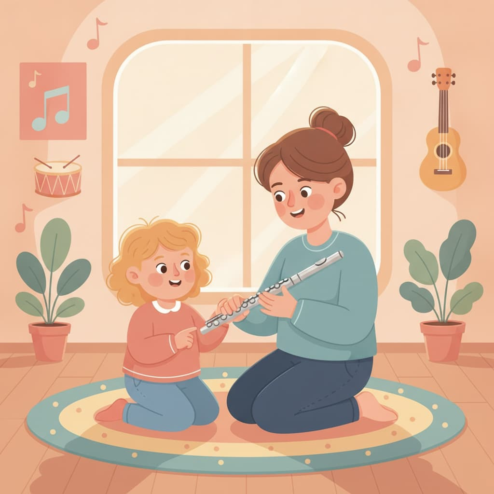
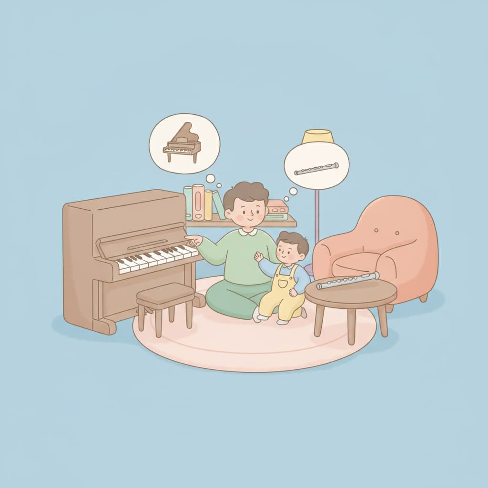
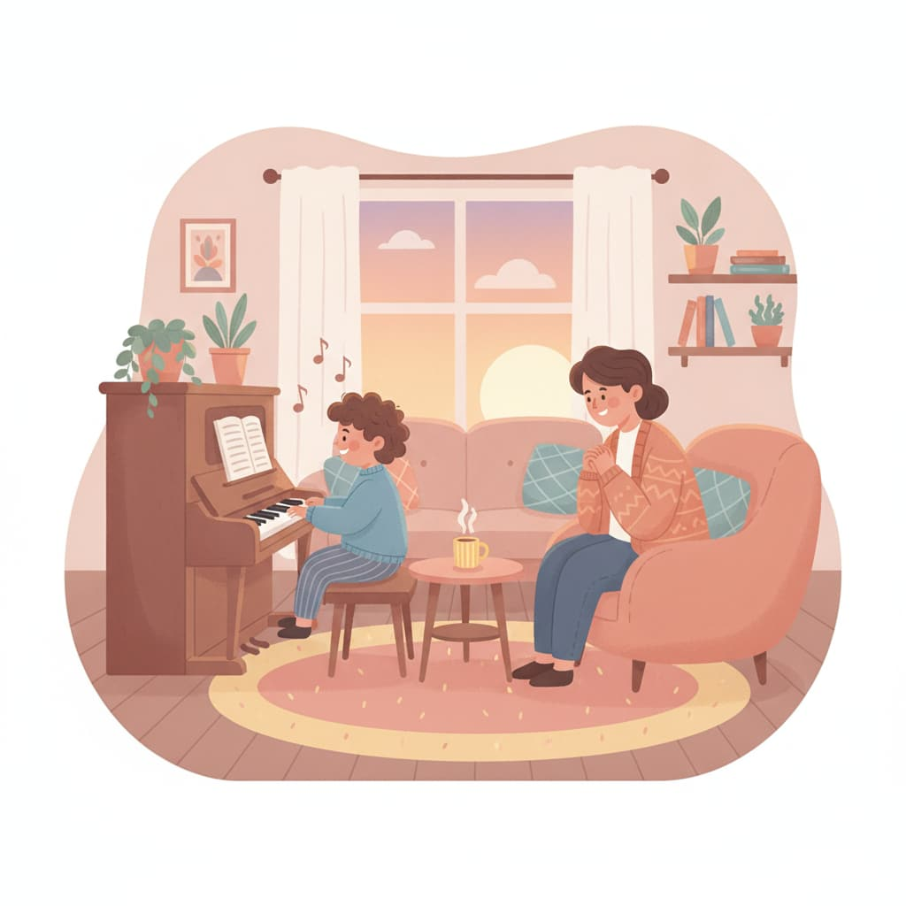
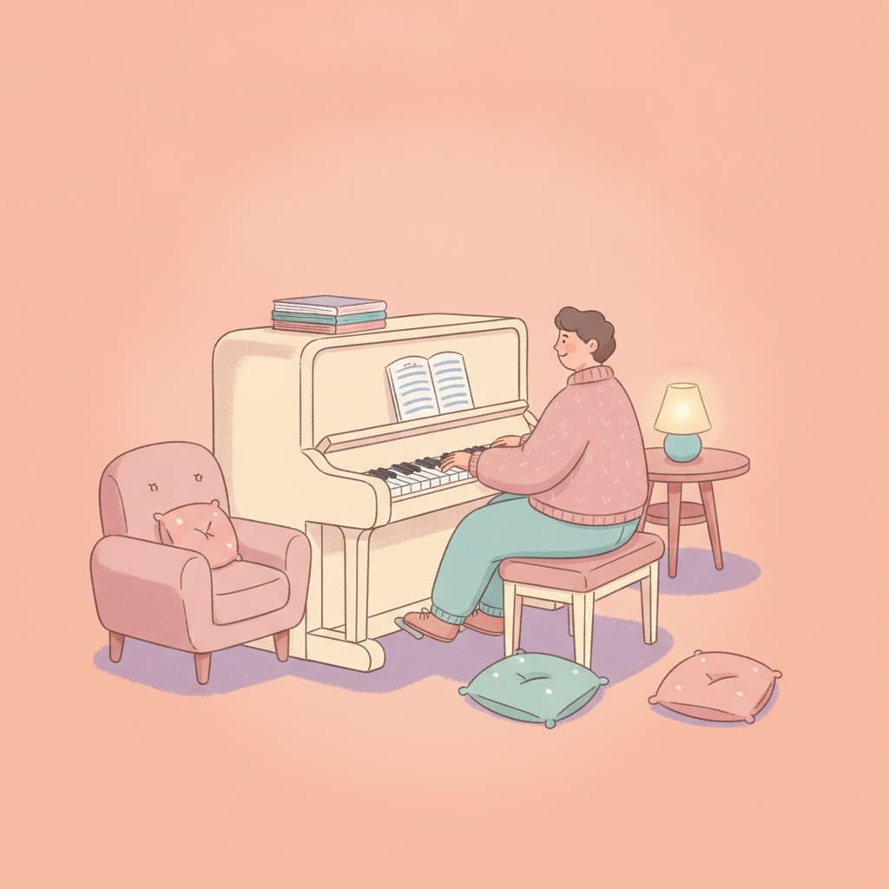
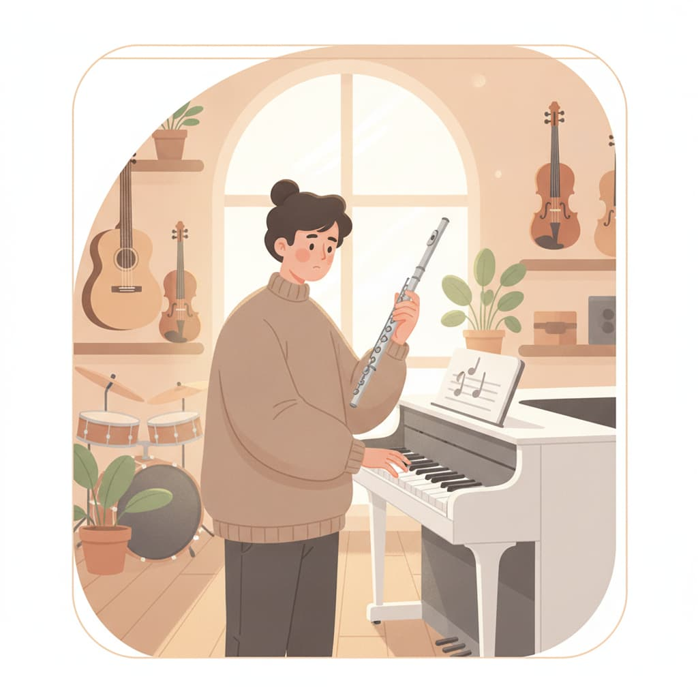

Aria's Notes
Aria 老師碎碎念
給學生家長與成人學習者的長笛・鋼琴學習筆記 —— 從選樂器、練習方法到上課心得分享。

給成人學習者
小時候學過鋼琴，長大想重新開始，該從哪裡練起？
以前學過，現在看譜變慢。不必先自己練回某個程度，才去找老師。
給家長
孩子幾歲適合學長笛？先看門牙、手臂長度和肺活量
長笛的時機不是看年齡，是看門牙換完了沒。還有手搆不搆得到、氣夠不夠撐完一句。
給家長
國三會考或高中學測那年，音樂課該先停嗎？
他有多喜歡你看得出來，難的是時間。聊聊這一年的課可以怎麼調，還有停一年到底會掉什麼。

給家長
在台北幫孩子找長笛老師，這 5 件事比學歷重要
名單很長，判斷標準卻很少。互動、通勤、氣息教法、旁聽與檢定經驗，一件一件看。

給家長
怎麼幫孩子挑第一個樂器？鋼琴與長笛的特性比較
第一個樂器選鋼琴還是長笛？從年齡、體格與個性，聊聊怎麼挑對入門樂器。

給家長
孩子不肯練琴？幫他建立練琴習慣的 5 個方法
上課開心、回家不練？五個不用吼的方法，讓練習自己發生。

給成人學習者
成人零基礎學長笛、鋼琴，會太晚嗎？
「我這年紀還能學樂器嗎？」聊聊成人學音樂的優勢與常見迷思。
給成人學習者
上班族學長笛、鋼琴，練琴時間怎麼排？一天練多久才有效
一週只能練三天、每次二十分鐘？短而規律，勝過週末狂練。附一週範本。
入門基礎
學長笛、鋼琴，完全看不懂五線譜可以從哪裡開始？
看不懂五線譜也能開始學樂器嗎？用認地標音、拆節奏的方式踏出看譜第一步。

入門基礎
學長笛、鋼琴初學要準備什麼？電鋼琴、租琴與配件
還沒上課要先買琴嗎？電鋼琴、租琴與配件，哪些該花、哪些先省。